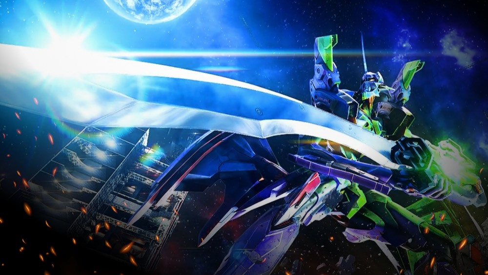

P 新世紀エヴァンゲリオン -319 RED-
約1/319.7から、161回転のIMPACT MODEへ。
- 導入
- 2026年10月
- メーカー
- ビスティ
- 分類
- パチンコ
主要スペック
2026年10月19日導入のV-ST機。通常時約1/319.7、ST直行約65%と時短引き戻しを含む突入約75%、右打ちALL1500個の流れを固定条件で確認できます。
- 通常時約1/319.7、ST中約1/98.9
- ST直行約65%、時短・残保留込み突入約75%
- ST161回・継続約81%、右打ちALL1500個
P 新世紀エヴァンゲリオン -319 RED-の見どころと計算条件
2026年10月19日導入のV-ST機。通常時約1/319.7、ST直行約65%と時短引き戻しを含む突入約75%、右打ちALL1500個の流れを固定条件で確認できます。
エヴァ319 REDを数字で早分かり
結果では表記出玉と実獲得出玉を分け、250玉貸し・28玉交換の固定条件で差玉と収支を計算します。
319 REDを見分けるポイント
本機は2026年10月19日導入のP機・V-STタイプです。通常時約1/319.7、ST161回、右打ち中の大当りは1500個という構成で、図柄揃い約1/399.9・ST157回のスマパチ『はじまりの記憶』とは別スペックです。
同じ約1/319帯の『未来への咆哮』ともST回数が異なります。記事とシミュレーターでは機種名、通常確率、ST161回の3点を揃えて扱います。
ST直行65%と突入75%の違い
初当りの約65%はST161回へ直行し、残る約35%は時短100回へ進みます。時短100回と残保留での引き戻しを含めたトータルST突入率が約75%です。
シミュレーターは複数の入口を約75%の突入抽選へまとめます。時短だけを独立した100回転演出としては再現しないため、結果では『直行65%』ではなく『引き戻し込み75%』を使用します。
ST161回とALL1500個
ST中は約1/98.9、161回と残保留を含む継続率は約81%です。電チュー入賞時の大当りは1500個払い出し＋ST161回で、簡易モデルも右打ち出玉を1500個に固定しています。
初当り時の約1%にある1500個振り分け、保留連示唆、電サポ中の増減、オーバー入賞は簡易結果へ個別反映しません。初回出玉は代表値の300個として計算します。
初当りまでの確率目安
約1/319.7を毎回同じ確率で抽選すると仮定した単純計算では、100回転以内に1回以上当たる確率は約26.9%、200回転以内は約46.6%、320回転以内は約63.3%、500回転以内は約79.1%です。
平均319.7回転は『319回転までに必ず当たる』という意味ではありません。1回の結果ではなく、複数回の早い当りと深いハマりを比べて確率の幅を確認してください。
固定レートと収支の見方
- 17.3回/1,000円・250玉貸し・28玉交換で固定
- 平均投資目安は約18,500円
- 持ち玉比率・再プレイ・端玉・電サポ中の玉増減は含めない
- 実機の当選・収支・遊技結果を保証しない娯楽用モデル
平均回転と投資目安の計算
通常時の初当り確率は約1/319.7です。当サイトでは、1,000円あたり17.3回転という機種別の固定条件を使い、平均投資目安を「319.7 ÷ 17.3 × 1,000円」で計算します。この条件では約18,500円が平均投資の目安です。
通常ヘソ、250玉貸し・28玉交換で固定し、IMPACT MODE突入率75%と継続率81%を簡易抽選します。表記出玉とは別に、打ち出しとオーバー入賞を簡易反映した実獲得出玉を収支へ使用します。平均値は長期間の理論上の目安であり、1回ごとの結果や実際の遊技収支を保証するものではありません。
シミュレーション結果の見方
当るまで初当りまでの回転数と投資目安
RUSHIMPACT MODEへの突入と連チャン回数
出玉表記出玉と、打ち出しを反映した実獲得出玉
最終収支実獲得出玉を28玉交換で換算した収支目安
結果は自動で「マイ記録」に保存され、同じ機種を何回試したか、最高収支、勝率をあとから確認できます。
簡易シミュレーターについて
初当り・IMPACT MODE・出玉の流れを固定条件で体験できます。JavaScriptを有効にすると、この位置にシミュレーター、演出、マイ記録、機種別ランキングが表示されます。
結果は娯楽・確率理解のための参考表示です。金銭的価値や交換価値はなく、実際の勝敗や収支を保証しません。18歳未満の方の利用はお控えください。
エヴァ319 REDのよくある質問
エヴァ319 REDはどんな台？
2026年10月19日導入のV-ST機。 通常時約1/319.7、ST中約1/98.9が主な確認ポイントです。
エヴァ319 REDの平均投資目安は？
当サイトの固定条件では1,000円あたり17.3回転として、平均18,500円が目安です。実店舗の回転率や持ち玉状況で変わるため、実収支を保証する値ではありません。
シミュレーターでは何を体験できる？
初当りまでの回転数、IMPACT MODEへの突入、連チャンと出玉を固定条件で簡易抽選します。実機の全演出や内部状態を完全再現するものではありません。
出玉と収支はどう計算する？
スペック上の表記出玉とは別に、打ち出しロスとオーバー入賞を簡易反映した実獲得出玉を算出します。250玉貸し・28玉交換の固定条件で差玉と収支目安を表示します。